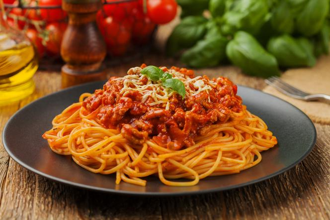

Spaghetti Bolognese

Bolognese sauce known in Italian as ragù alla bolognese,
ragù bolognese, is a meat-based sauce in Italian cuisine,
typical of the city of Bologna. It is customarily used to
dress tagliatelle al ragù and to prepare lasagne alla
bolognese or combined with spaghetti pasta makes an all
time best dish.
Ingredients
- tomatos
- spaghetti pasta
- red wine
- basil
- milled beef meat
Directions
- pill tomatos and crush them into souce
- add pasta to boiling water
- fry beef on big fire
- while pasta and beef are premering add smashed and pilled tomatos to pan and fry on small fire
- add basil to tomatos
- after meat is done add it to tomatos and mix it together
- after pasta is soft take one cup of water and add it to tomatos
- after water vaporize combine pasta and souce
- serve warm